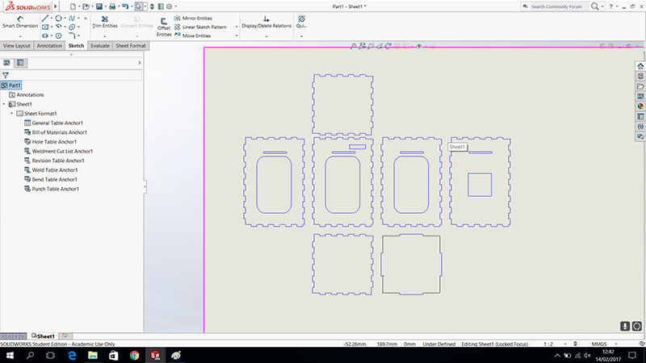
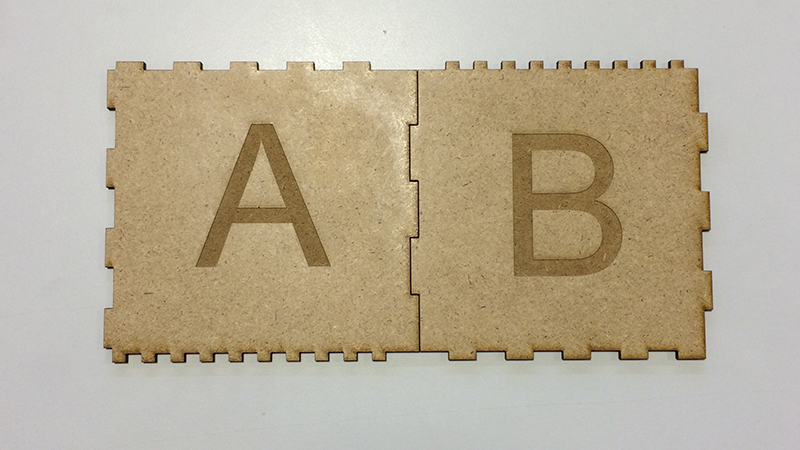
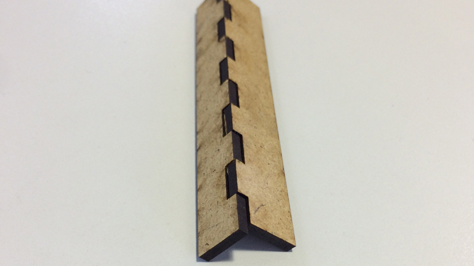
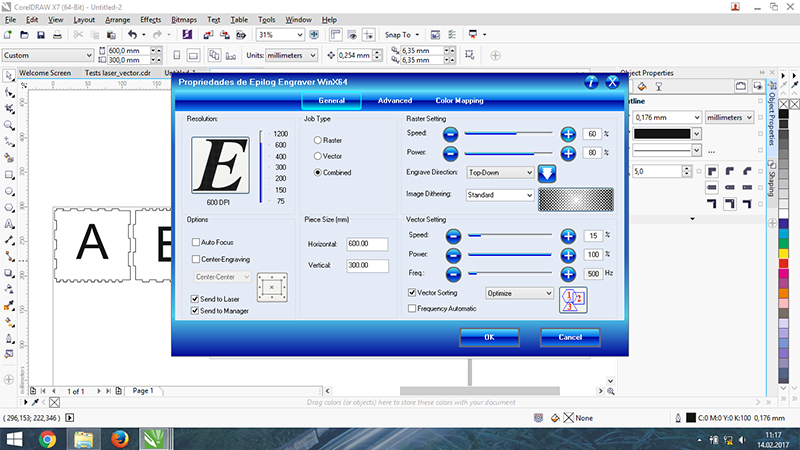
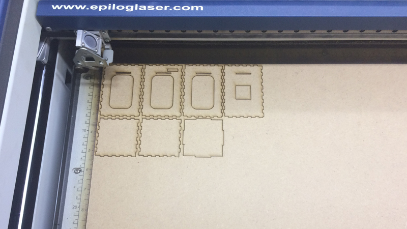
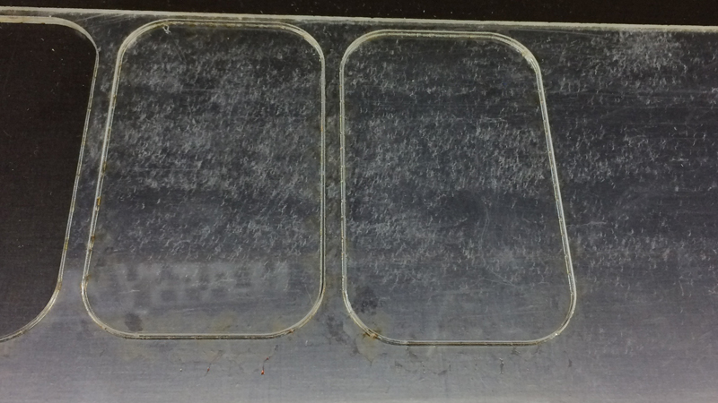
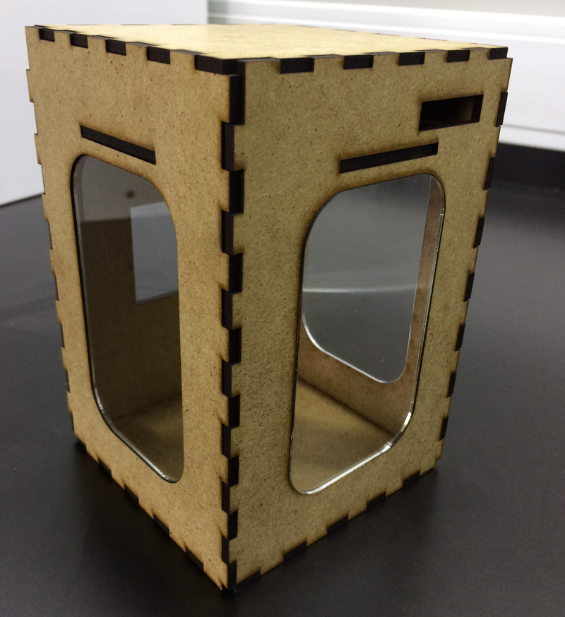
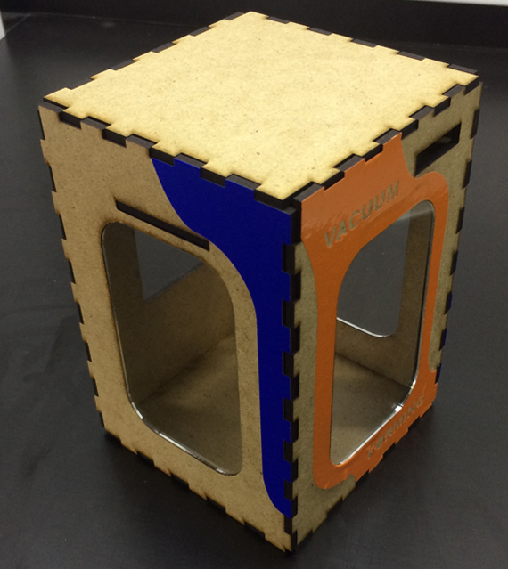

Laser Cut
For try to use the laser cut i make a small prototype of my machine vacuum forming. I draw in small scale the main box os my machine, i draw in drawing option in Solidworks. In solidworks i make a Parametric model.

But before i draw the box i try various sizes fittings in test pieces.
In my first test i draw two pieces to try the fittings, each side of the piece have different sizes.

After i chose the size of fittings, i test in a small piece the consistency of fitting i chose for my prototype.

In Laser Cut we used the Corel Draw to send the cut file to Laser cut.

I used to make this tests MDF 0.3MM.
To use this material in Laser cut the parameters of cut are:
Speed: 15%
Power: 100%
Freq: 500Hz

And i also used acrylic 0.3MM with this cut patameters:
Speed:9%
Power:100%
Feq:5000 Hz

For make raster in my test piece i use this parameters:
Speed:60
Power:60%
This is the final result of my small prototype.

Vinyl Cut
For the Vinyl cut i draw a small decorate vinyl to cut. I draw in solidworks and to send the file to the vinyl cut we use the inkscape with a plugin epilog. 